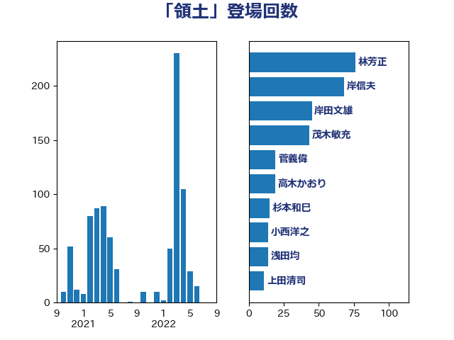

単語「領土」

| 林芳正 | 自由民主党 | 76 回 |
| 岸信夫 | 自由民主党 | 68 回 |
| 岸田文雄 | 自由民主党 | 45 回 |
| 茂木敏充 | 自由民主党 | 43 回 |
| 菅義偉 | 自由民主党 | 19 回 |
| 高木かおり | 日本維新の会 | 19 回 |
| 杉本和巳 | 日本維新の会 | 15 回 |
| 小西洋之 | 立憲民主党 | 14 回 |
| 浅田均 | 日本維新の会 | 14 回 |
| 上田清司 | 国民民主党 | 11 回 |
| 徳永久志 | 立憲民主党 | 11 回 |
| 福山哲郎 | 立憲民主党 | 11 回 |
| 藤岡隆雄 | 立憲民主党 | 11 回 |
| 穀田恵二 | 日本共産党 | 10 回 |
| 小田原潔 | 自由民主党 | 9 回 |
| 重徳和彦 | 立憲民主党 | 9 回 |
| 野田佳彦 | 立憲民主党 | 8 回 |
| 鈴木俊一 | 自由民主党 | 8 回 |
| 大西健介 | 立憲民主党 | 7 回 |
| 浦野靖人 | 日本維新の会 | 7 回 |
| 高木啓 | 自由民主党 | 7 回 |
| 三宅伸吾 | 自由民主党 | 6 回 |
| 伊波洋一 | 無所属 | 6 回 |
| 和田有一朗 | 日本維新の会 | 6 回 |
| 岡田克也 | 立憲民主党 | 6 回 |
| 猪口邦子 | 自由民主党 | 6 回 |
| 有村治子 | 自由民主党 | 5 回 |
| 木原誠二 | 自由民主党 | 5 回 |
| 松川るい | 自由民主党 | 5 回 |
| 赤澤亮正 | 自由民主党 | 5 回 |
| 赤羽一嘉 | 公明党 | 5 回 |
| 青柳仁士 | 日本維新の会 | 5 回 |
| 上川陽子 | 自由民主党 | 4 回 |
| 伊藤岳 | 日本共産党 | 4 回 |
| 國場幸之助 | 自由民主党 | 4 回 |
| 小野寺五典 | 自由民主党 | 4 回 |
| 山田賢司 | 自由民主党 | 4 回 |
| 山谷えり子 | 自由民主党 | 4 回 |
| 新藤義孝 | 自由民主党 | 4 回 |
| 篠原豪 | 立憲民主党 | 4 回 |
| 美延映夫 | 日本維新の会 | 4 回 |
| 鬼木誠 | 立憲民主党 | 4 回 |
| 鷲尾英一郎 | 自由民主党 | 4 回 |
| 井上哲士 | 日本共産党 | 3 回 |
| 加藤勝信 | 自由民主党 | 3 回 |
| 坂井学 | 自由民主党 | 3 回 |
| 城内実 | 自由民主党 | 3 回 |
| 大塚耕平 | 国民民主党 | 3 回 |
| 大野泰正 | 自由民主党 | 3 回 |
| 山添拓 | 日本共産党 | 3 回 |
| 山田宏 | 自由民主党 | 3 回 |
| 本村伸子 | 日本共産党 | 3 回 |
| 杉田水脈 | 自由民主党 | 3 回 |
| 松原仁 | 立憲民主党 | 3 回 |
| 柴田巧 | 日本維新の会 | 3 回 |
| 江田憲司 | 立憲民主党 | 3 回 |
| 西銘恒三郎 | 自由民主党 | 3 回 |
| 金田勝年 | 自由民主党 | 3 回 |
| 青山大人 | 立憲民主党 | 3 回 |
| 鰐淵洋子 | 公明党 | 3 回 |
| 井上英孝 | 日本維新の会 | 2 回 |
| 佐藤正久 | 自由民主党 | 2 回 |
| 勝部賢志 | 立憲民主党 | 2 回 |
| 古川元久 | 国民民主党 | 2 回 |
| 古賀之士 | 立憲民主党 | 2 回 |
| 吉良州司 | 無所属 | 2 回 |
| 太栄志 | 立憲民主党 | 2 回 |
| 小沼巧 | 立憲民主党 | 2 回 |
| 山下芳生 | 日本共産党 | 2 回 |
| 川合孝典 | 国民民主党 | 2 回 |
| 松本尚 | 自由民主党 | 2 回 |
| 松野博一 | 自由民主党 | 2 回 |
| 田村智子 | 日本共産党 | 2 回 |
| 田村貴昭 | 日本共産党 | 2 回 |
| 礒崎哲史 | 国民民主党 | 2 回 |
| 簗和生 | 自由民主党 | 2 回 |
| 紙智子 | 日本共産党 | 2 回 |
| 緑川貴士 | 立憲民主党 | 2 回 |
| 萩生田光一 | 自由民主党 | 2 回 |
| 赤嶺政賢 | 日本共産党 | 2 回 |
| 足立康史 | 日本維新の会 | 2 回 |
| 鈴木敦 | 国民民主党 | 2 回 |
| 鈴木貴子 | 自由民主党 | 2 回 |
| 青山繁晴 | 自由民主党 | 2 回 |
| 音喜多駿 | 日本維新の会 | 2 回 |
| 高橋はるみ | 自由民主党 | 2 回 |
| 鳩山二郎 | 自由民主党 | 2 回 |
| ながえ孝子 | 無所属 | 1 回 |
| 三木圭恵 | 日本維新の会 | 1 回 |
| 上杉謙太郎 | 自由民主党 | 1 回 |
| 世耕弘成 | 自由民主党 | 1 回 |
| 中谷真一 | 自由民主党 | 1 回 |
| 井上貴博 | 自由民主党 | 1 回 |
| 伊藤信太郎 | 自由民主党 | 1 回 |
| 前原誠司 | 国民民主党 | 1 回 |
| 北村経夫 | 自由民主党 | 1 回 |
| 北神圭朗 | 無所属 | 1 回 |
| 吉田宣弘 | 公明党 | 1 回 |
| 吉田統彦 | 立憲民主党 | 1 回 |
| 和田政宗 | 自由民主党 | 1 回 |
| 塩川鉄也 | 日本共産党 | 1 回 |
| 大口善徳 | 公明党 | 1 回 |
| 大家敏志 | 自由民主党 | 1 回 |
| 大野敬太郎 | 自由民主党 | 1 回 |
| 奥野総一郎 | 立憲民主党 | 1 回 |
| 宮崎政久 | 自由民主党 | 1 回 |
| 宮沢洋一 | 自由民主党 | 1 回 |
| 山口俊一 | 自由民主党 | 1 回 |
| 山本順三 | 自由民主党 | 1 回 |
| 岩本剛人 | 自由民主党 | 1 回 |
| 平山佐知子 | 無所属 | 1 回 |
| 斎藤アレックス | 国民民主党 | 1 回 |
| 朝日健太郎 | 自由民主党 | 1 回 |
| 枝野幸男 | 立憲民主党 | 1 回 |
| 森英介 | 自由民主党 | 1 回 |
| 榛葉賀津也 | 国民民主党 | 1 回 |
| 江藤拓 | 自由民主党 | 1 回 |
| 泉健太 | 立憲民主党 | 1 回 |
| 渡辺猛之 | 自由民主党 | 1 回 |
| 玉木雄一郎 | 国民民主党 | 1 回 |
| 田島麻衣子 | 立憲民主党 | 1 回 |
| 石井章 | 日本維新の会 | 1 回 |
| 石破茂 | 自由民主党 | 1 回 |
| 神田潤一 | 自由民主党 | 1 回 |
| 福岡資麿 | 自由民主党 | 1 回 |
| 竹内譲 | 公明党 | 1 回 |
| 細田健一 | 自由民主党 | 1 回 |
| 義家弘介 | 自由民主党 | 1 回 |
| 羽田次郎 | 立憲民主党 | 1 回 |
| 舞立昇治 | 自由民主党 | 1 回 |
| 若宮健嗣 | 自由民主党 | 1 回 |
| 蓮舫 | 立憲民主党 | 1 回 |
| 藤田文武 | 日本維新の会 | 1 回 |
| 衛藤晟一 | 自由民主党 | 1 回 |
| 西村智奈美 | 立憲民主党 | 1 回 |
| 西田昌司 | 自由民主党 | 1 回 |
| 赤木正幸 | 日本維新の会 | 1 回 |
| 野上浩太郎 | 自由民主党 | 1 回 |
| 野田聖子 | 自由民主党 | 1 回 |
| 野間健 | 立憲民主党 | 1 回 |
| 鈴木隼人 | 自由民主党 | 1 回 |
| 青木愛 | 立憲民主党 | 1 回 |
| 高野光二郎 | 自由民主党 | 1 回 |